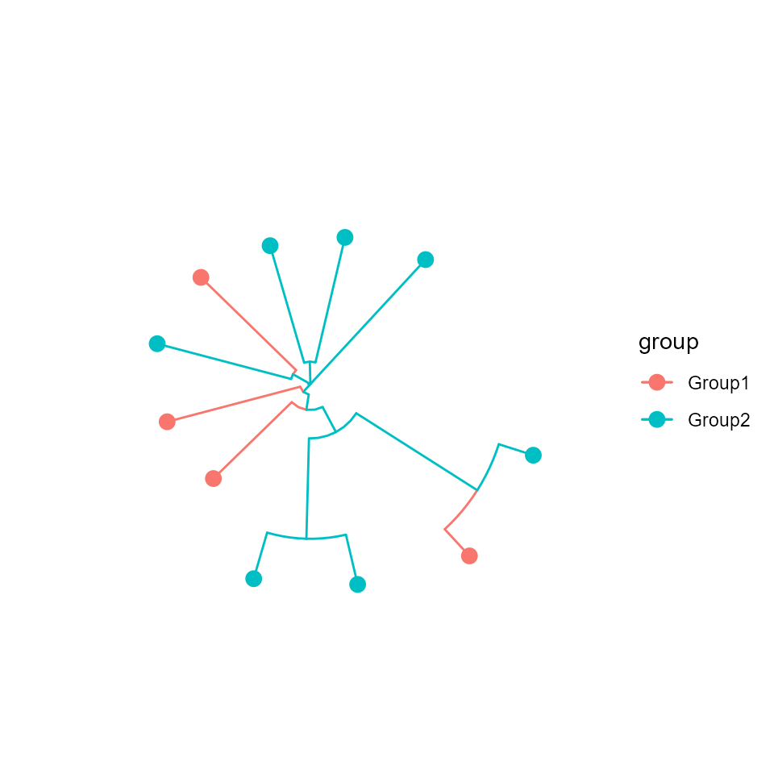

stana
Noriaki Sato
usage_of_stana.Rmdstana
stana is a library for strain-level analysis of
metagenomic dataset using single nucleotide variants profile and gene
contents. Multiple softwares are described, such as MIDAS2,
metaSNV, and InStrain. The library load the
profile to stana class object and perform various analysis
like marker gene detection and visualization of trees based on metadata.
Here, we included the sample stana class object profiled from 26
metagenome samples processed with MIDAS2 against UHGG, and
random grouping from PRJEB9584. The data was loaded with
loadMIDAS2 function. One species profile, identifier
100003 (s__Alistipes shahii) is loaded.
## Specify the output of `merge` command with grouping
stana <- loadMIDAS2("merge_midas2_sample", cl=randomGroup, candSp="100003",
loadSummary=TRUE,loadInfo=TRUE,loadDepth=TRUE,
taxtbl=taxtbl, db="uhgg")
library(stana)
## Examine sample object
load(system.file("extdata", "sysdata.rda", package = "stana"))
stana## Type: MIDAS2
## Directory: midas2_sample_merge_uhgg
## Species: 1
## Filter type: group, number: 2, proportion: 0.8
## Loaded SNV table: 1
## Species cleared SNV filter: 1
## Loaded gene table (copynum): 1
## Species cleared gene filter: 1
## 7.2 MbFiltering
The species that satisfies the filtering criteria specified can be
accessed by the slot clearSnps storing species ID. If
taxtbl was provided on load* functions,
clearSnpsSpecies has species name.
stana@clearSnps## [1] "100003"
stana@clearSnpsSpecies## [1] "d__Bacteria;p__Bacteroidota;c__Bacteroidia;o__Bacteroidales;f__Rikenellaceae;g__Alistipes;s__Alistipes shahii"Calling consensus sequence
You can call the consensus sequence based on SNV frequency table. The
implementation and filtering options are based on the original
MIDAS script (call_consensus.py). The
resulting FASTA will be written to the current directory, and is loaded
into fastaList slot.
library(phangorn)
library(ggtree)
stana <- consensusSeqMIDAS2(stana, species="100003", verbose=FALSE)## Beginning calling for 100003
## Site number: 5019
## Outputting consensus sequence to 100003_consensus.fasta
## Tree estimation and visualization by `phangorn` and `ggtree`
dm <- dist.ml(stana@fastaList$`100003`)
tre <- NJ(dm)
tre <- groupOTU(tre, stana@cl)
tp <- ggtree(tre, aes(color=.data$group),
layout='circular') +
geom_tippoint(size=3)
tp
Perform PERMANOVA based on the groups
doAdonis(stana)Identify key elements for differentiating groups
Using the profiled matrices, the Boruta algorithm can be
run to identify the key elements that distinguish the groups. The
doBoruta function performs the Boruta
algorithm between the clusters specified in cl (if
NULL, the cl slot is used). If pre-processed
matrices are to be used, please pass them to mat.
library(Boruta)
## You can provide preprocessed matrix to `mat`
doBoruta(stana, target = "gene", sp="100003")## Using grouping from the slot
## If needed, please provide preprocessed matrix of genes to `mat`
## Feature number: 21806
## Performing Boruta## $boruta
## Boruta performed 99 iterations in 28.17062 secs.
## Tentatives roughfixed over the last 99 iterations.
## 12 attributes confirmed important: UHGG000008_01641, UHGG025024_01181,
## UHGG060667_01243, UHGG061776_01339, UHGG158704_01078 and 7 more;
## 21794 attributes confirmed unimportant: UHGG000008_00008,
## UHGG000008_00009, UHGG000008_00010, UHGG000008_00012, UHGG000008_00015
## and 21789 more;Parsing functional annotations
Functional annotation of genes can be obtained through
PATRIC server (used in MIDAS), and annotation
results such as ortholog assignment using eggNOG-mapper v2.
checkPATRIC and checkEGGNOG function can be
used to parse the obtained data. The below example returns KEGG
ORTHOLOGY from eggNOG-mapper v2 annotation file.
annotationFile <- "100003_uhgg_eggnog_out.emapper.annotations"
annot <- checkEGGNOG(annotationFile, ret = "KEGG_ko")
annotUsing the parsed annotation tibble, gene copy number data frame can
be summarised by user-defined function, such as mean. Note
that annotation tibble must have ID and value
column specifying gene ID in ID and functional annotation
such as KEGG ORTHOLOGY ID in value.
summariseAbundance(stana, "100224", annot)Visualization
Several visualization functions are implemented.
Plotting mean coverage across samples
plotCoverage(stana, "100003")+ ## grouping is already set
ggrepel::geom_text_repel(aes(label=ids), bg.colour="white")
## R version 4.2.1 (2022-06-23 ucrt)
## Platform: x86_64-w64-mingw32/x64 (64-bit)
## Running under: Windows 10 x64 (build 22621)
##
## Matrix products: default
##
## locale:
## [1] LC_COLLATE=Japanese_Japan.utf8 LC_CTYPE=Japanese_Japan.utf8
## [3] LC_MONETARY=Japanese_Japan.utf8 LC_NUMERIC=C
## [5] LC_TIME=Japanese_Japan.utf8
##
## attached base packages:
## [1] stats graphics grDevices utils datasets methods base
##
## other attached packages:
## [1] Boruta_8.0.0 ggtree_3.7.1.002 phangorn_2.11.1 ape_5.7-1
## [5] stana_0.99.0 BiocStyle_2.26.0
##
## loaded via a namespace (and not attached):
## [1] colorspace_2.1-0 rjson_0.2.21 rprojroot_2.0.3
## [4] circlize_0.4.15 GlobalOptions_0.1.2 fs_1.6.1
## [7] aplot_0.1.10 rstudioapi_0.14 farver_2.1.1
## [10] graphlayouts_0.8.4 ggrepel_0.9.3 bit64_4.0.5
## [13] fansi_1.0.4 ranger_0.15.1 codetools_0.2-19
## [16] splines_4.2.1 cachem_1.0.7 knitr_1.42
## [19] polyclip_1.10-4 jsonlite_1.8.0 cluster_2.1.4
## [22] dbplyr_2.3.2 ggforce_0.4.1 BiocManager_1.30.20
## [25] compiler_4.2.1 httr_1.4.5 Matrix_1.5-4
## [28] fastmap_1.1.1 lazyeval_0.2.2 cli_3.6.1
## [31] tweenr_2.0.2 htmltools_0.5.5 tools_4.2.1
## [34] igraph_1.4.2 gtable_0.3.3 glue_1.6.2
## [37] dplyr_1.1.1 rappdirs_0.3.3 fastmatch_1.1-3
## [40] Rcpp_1.0.10 jquerylib_0.1.4 pkgdown_2.0.7
## [43] vctrs_0.6.2 nlme_3.1-162 ggraph_2.1.0
## [46] xfun_0.38 stringr_1.5.0 lifecycle_1.0.3
## [49] MASS_7.3-58.3 scales_1.2.1 tidygraph_1.2.3
## [52] ragg_1.2.5 parallel_4.2.1 RColorBrewer_1.1-3
## [55] yaml_2.3.7 curl_5.0.0 memoise_2.0.1
## [58] gridExtra_2.3 ggplot2_3.4.2 ggfun_0.0.9
## [61] yulab.utils_0.0.6 sass_0.4.5 stringi_1.7.12
## [64] RSQLite_2.3.1 highr_0.10 desc_1.4.2
## [67] tidytree_0.4.2 permute_0.9-7 filelock_1.0.2
## [70] shape_1.4.6 rlang_1.1.0 pkgconfig_2.0.3
## [73] systemfonts_1.0.4 bitops_1.0-7 evaluate_0.20
## [76] lattice_0.21-8 purrr_1.0.1 treeio_1.22.0
## [79] patchwork_1.1.2 labeling_0.4.2 bit_4.0.5
## [82] tidyselect_1.2.0 magrittr_2.0.3 bookdown_0.33
## [85] R6_2.5.1 generics_0.1.3 DBI_1.1.3
## [88] pillar_1.9.0 withr_2.5.0 mgcv_1.8-42
## [91] RCurl_1.98-1.12 tibble_3.2.1 crayon_1.5.2
## [94] utf8_1.2.3 BiocFileCache_2.6.1 rmarkdown_2.21
## [97] viridis_0.6.2 GetoptLong_1.0.5 grid_4.2.1
## [100] data.table_1.14.8 blob_1.2.4 vegan_2.6-4
## [103] digest_0.6.29 tidyr_1.3.0 gridGraphics_0.5-1
## [106] textshaping_0.3.6 munsell_0.5.0 viridisLite_0.4.1
## [109] ggplotify_0.1.0 bslib_0.4.2 quadprog_1.5-8